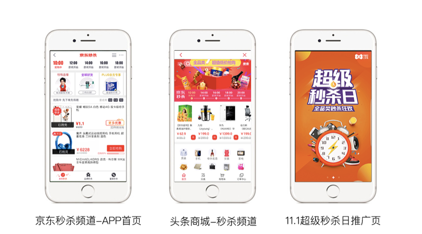
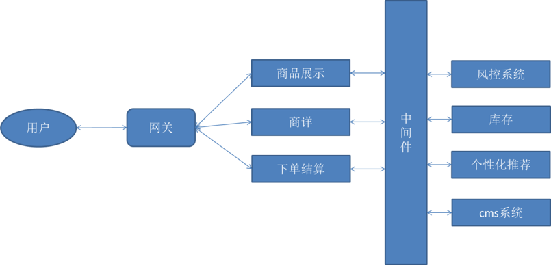
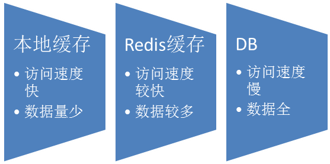
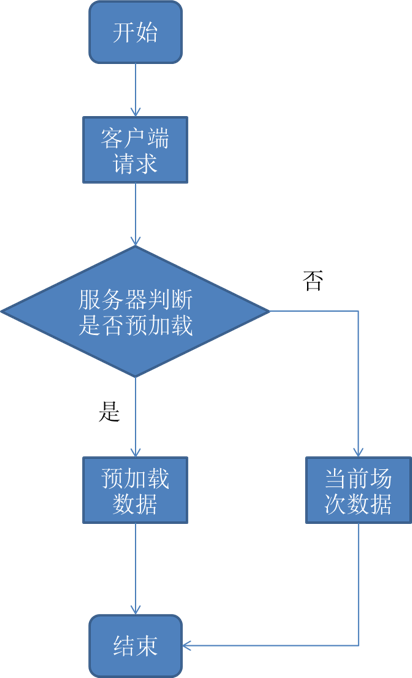
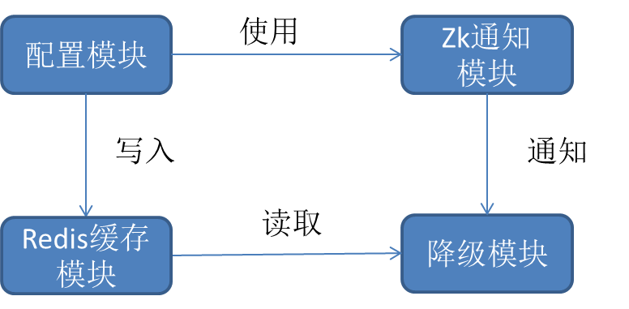

本文将从海量服务,卓越性能，高效可用等三方面分享探讨如何设计优化秒杀类系统，以及在实际问题中总结的宝贵经验。
京东秒杀作为京东核心的促销频道之一，在京东商城中占有重要的地位，其通过超级秒杀日，超级秒杀，新品秒杀等限时促销活动，整合京东的优质资源，以提升用户体验和生活品质为核心，吸引了大量的用户积极参加。

图1 京东app秒杀前端界面
海量的用户也给秒杀后台系统带来了一些巨大的挑战：
首先，京东秒杀作为整点促销，每天有10个场次，每个场次间隔2-6个小时不等，整点时刻会有成千上万的用户同时涌入秒杀系统进行抢购，尤其是每年的618和双11瞬间的海量流量会对我们的系统和整个链路造成巨大的压力。如何解决切场前后的陡峭波峰流量，进行场次的平滑切换，在技术上难度较大。
其次，秒杀频道作为京东移动app首页和PC版首页的一级入口，又有微信、手机QQ、开普勒项目等导流，每天服务亿万商家和用户，其重要性不言而喻，因此必须保证服务高可用。在实际场景中，各种极端条件下可能出现各种各样预料不到的问题，如何在复杂恶意的极端条件下保证服务的高可用，是一个严峻的挑战。
从京东秒杀频道上线至今，京东秒杀稳定可靠高效的形象得到了商家和用户的一致称赞，其背后少不了秒杀后台组开发日复一夜对系统的优化创新以及应急预案的完善梳理。本文将从海量服务,卓越性能，高效可用等三方面分享探讨如何设计优化秒杀类系统，以及在实际问题中总结的宝贵经验
### 卓越性能–瞬时流量涌入低延迟
为了应对日常的流量高峰，尤其是618，双11等大促活动的海量流量，后台的架构必须可伸缩—-只需要简单的新加机器就能应对出现的流量高峰。因此必须改变原有的一站式架构，一站式架构的最大问题是不同功能和模块之间的耦合太大，不易于扩展，难以维护。随着网站规模的扩大，对系统的扩容不可避免，而一站式的架构则非常不利于扩容，扩容之后的测试维护成本巨大。为了解决扩容难的问题，必须将不同功能模块和系统进行解耦，采用微服务架构，将整个系统拆分为商品展示，商详，下单，风控，库存，个性化推荐等各个微服务，各服务之间采用消息队列和RPC调用等方式传输数据。

图2 京东秒杀后台微服务架构
采用微服务架构，每个服务安排一个团队维护，不同服务之间低耦合，有利于代码的开发和优化，相互之间独立工作，提高了开发效率。并且微服务的架构也更有利于进行水平扩展，按需扩容只对需要的系统进行扩容，一方面有利于快速扩容，另一方面也降低了扩容对整体系统带来的潜在风险。
随着系统的不断扩大、机器的逐渐增多，数据库将会逐渐成为性能的瓶颈。单机mysql的qps极限一般在2W/s,这远远不能满足秒杀的场景需求。常见的做法是采用redis等基于内存的Key-Value数据库作为缓存，减轻对db的压力。在实际使用中，我们会采用机器本地缓存，redis缓存等多级缓存机制，服务实例优先访问本地缓存，当本地缓存失效后访问redis缓存，redis缓存失效再访问db,然后将db的数据缓存到redis和本地。通过多级缓存的方式，减少了对数据库的直接访问，大大降低了对数据库的压力。访问顺序如下图所示：

图3 数据访问顺序
由于redis缓存是所有实例共享，因此在实际场景中经常会出现热key和某个key体积过大的情况，增加对某一分片的访问压力。为了解决这个问题，一种方式是在业务逻辑中将某一大key拆分为多个小key，另一种方法是对key加随机偏移量，将同一key散列到不同分片上，降低对单一分片的压力。
卓越性能–瞬时流量涌入低延迟
对于秒杀场景最大的挑战是某一时刻流量的突然增大，即所谓的尖峰流量。在秒杀中经常会有当前场次结束之后，切换到下一场次的场景，切场前后往往是流量最大的时刻，解决该问题的一种重要思想是把瞬间的大流量变成一段时间的平缓流量。现有系统秒杀场次的切换基本都依赖于用户主动的刷新，在切场前后用户会频繁的刷新页面，大量用户同时向服务器请求数据，会产生尖峰流量，直接加重了服务器、网络和数据库的压力。在京东秒杀系统中，我们采用切场前预加载的方式来减轻切场前后大流量对系统的压力。

图4 切场预加载流程图
我们定义t0表示整点切场时间，预加载的时间段为（t1,t2），t1,t2表示距离切场t0的时间，，当预加载的请求时间t落在t1和t2之间则下发下一场次数据，否则不预先下发，即距离切场太近或者太远的请求都不预下发数据，等待到点之后客户端直接请求。每次客户端向服务器发送请求，服务器都会下发一个随机预加载时间t’，t’的范围在t1和t2之间，客户端拿到t’时间之后，判断是否需要在t’时刻预加载数据或者在切场时间t0时刻请求数据。如果客户端预加载成功下一场次的数据，则在场次到点切换之后不再向服务器发送请求，直接使用本地预加载数据。通过这种预加载的方式将整点切场的部分流量分摊到t1和t2时间段，大大削弱了切场整点的尖峰流量。
高效可用–全年稳定无宕机
系统在线上运行时，我们需要实时的监控运行状态，以便能够及时发现问题，并对出现的问题立刻采取措施。在京东秒杀中我们采用ump监控系统和logbooking日志系统对系统的关键指标进行监控，在实际使用中，我们重点关注以下指标：
- 接口性能
借助ump监控系统，我们重点观察接口的响应时间，接口的可用率和调用次数，一旦某个指标超过设定的阈值，则通过短信和邮件通知系统负责人，及时排查问题。 - 线上日志
开发人员定期排查线上日志，线上日志作为第一手资料，记录了系统运行的各种重要信息，通过排查线上日志开发人员能够及时发现系统的逻辑错误和潜在的风险。 - 基础服务
主要包括容器内存，cpu，硬盘容量，redis内存使用量，数据库qps等一系列的指标,一旦发现异常则通过切换流量，重启实例等方法解决问题。 - 网络状况
重点观察网关和redis缓存的流入流出流量，如果发现某个机房和分片突然出现高流量，可以及时采取扩容限流等措施缓解流量。
虽然我们采取了完善的措施来预防可能发生的异常和事故，但在实际环境中，总会出现各种意料之外的情况，这时就必须依赖于服务降级和兜底。服务降级是指当某些服务和功能超出了额定范围、超负荷工作，为了防止某些功能的超负荷工作拖累整个系统的性能和稳定，必要时需要对次要功能进行降级，保证核心流程的稳定。在实际降级中可以采用自动降级和手动降级相结合的方式，我们的原则是所有非核心流程都必须能被降级。兜底指当服务不可用时，接口返回上次的缓存数据或者预先配置好的静态数据，使用兜底的目的是为了防止服务突然不可用时，接口还能返回数据，不至于出现返回数据为空，导致前端显示为空白的情况。对于降级和兜底开关的配置，我们的做法是将手动降级和兜底开关写入redis缓存，然后通过zookeeper通知实例，实例收到通知后从redis缓存模块读取信息进行降级，通过zk统一通知的方式保证了开关在同一时刻生效。

图5 降级和兜底开关修改示意图
归功于秒杀项目所有人员的努力，京东秒杀经受住了历年618、双11的海量流量考验，促销玩法越来越丰富，客户参与人数越来越多，交易额不断创新高。相信随着京东秒杀业务的继续发展，对秒杀后台的挑战和压力也会越来越高，我们秒杀后台组开发将会更加努力，为客户提供更加优质的购物体验。